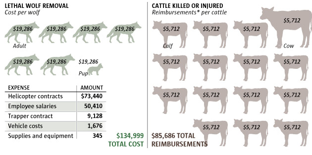

The 2016 cost of wolves
Wolf management is expensive in Washington, costing $973,275 in 2016 alone. That includes $134,999 spent to kill seven wolves, including a pup in the Profanity Peak Pack after the wolves killed or injured 15 cattle grazing on the Colville National Forest

*Reimbursements include direct and indirect livestock losse
Source: Department of Fish and Wildlife
Emily M. Eng / The Seattle Times